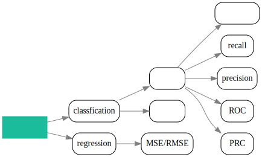
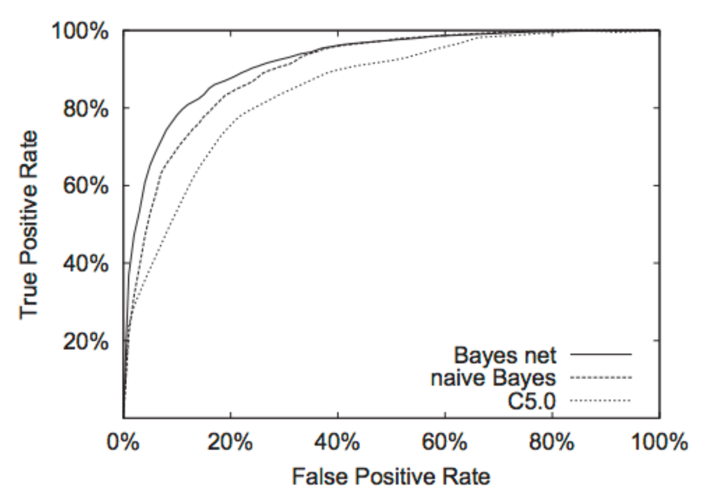
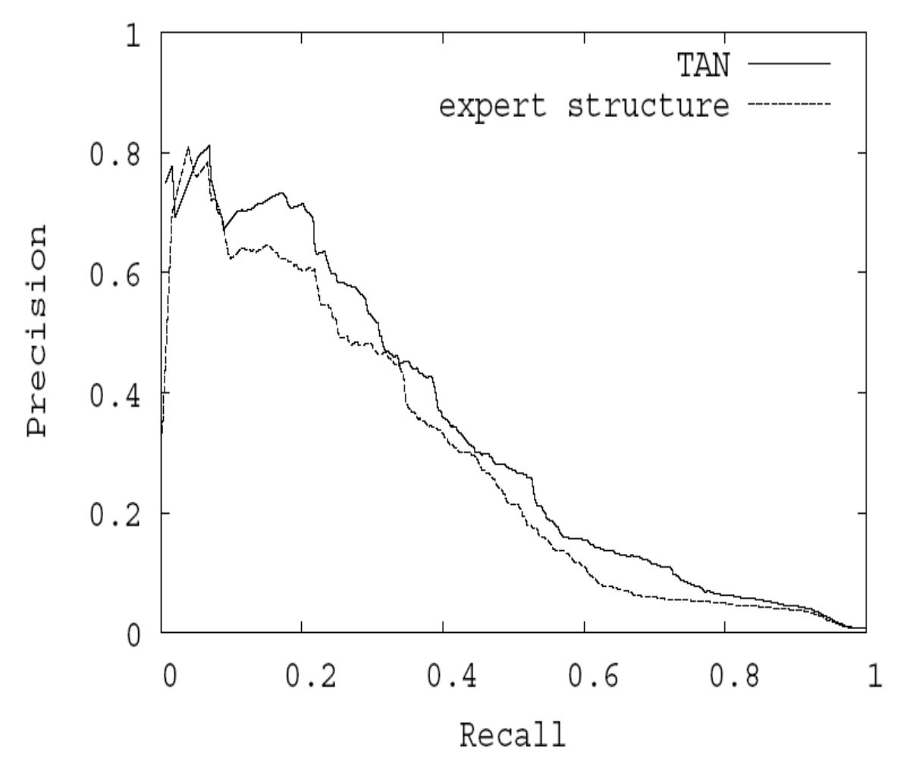

机器学习中的模型评价指标
Table of Contents
本文由作者原创，未经允许禁止转载。联系marcnuth(AT)foxmail.com了解转载事宜。
1 概述
机器学习的整个流程中，除了特征工程和模型设计上，评价优化也是很重要的一步。 之前一直想着把相关的内容做一个总结，趁着最近工作上也遇到了很多类似的问题，索性写一篇博文记录整理一下相关知识。
在机器学习的实际应用中，我们经常遇到这样三类问题:
- 对于该问题，应该用什么指标去评价整个算法的优劣？
- 在对模型/工作流程做了一些优化后，最终的表现是否有所提升？
- 在多个模型之间对比，哪个模型更好？
其中，对于问题1,我们可以认为这是评测指标选择问题，针对不同任务有不同的评价指标。 对于问题2和3,都可以归类为算法优劣对比的问题。 问题3说的很明白，在有多个模型可供选择的时候该问题很容易发生。 而对于问题2,一些可能的真实场景是，去除/增加某个特征，模型是否得到优化；调整参数后，模型是否得到优化等。
本文将主要针对问题1进行讨论总结，对于问题2和问题3,在之前我的文章中，已经讨论过了，可以参见 《机器学习中如何正确的进行模型选择》.
2 思维图

3 评测指标
3.1 分类问题
3.1.1 概述
分类问题包括二分类问题和多分类问题。其中，多分类问题都可以归结为二分类问题。 在本文中，针对分类问题的评测指标，我们都将将问题简化为二类分类问题的评测问题。
3.1.2 混淆矩阵(confusion matrix)
对于二分类问题，有
| Real Positive | Real Negative | Metrics | |
|---|---|---|---|
| Predict Positive | TP | FP | Precision=TP/(TP+FP) |
| Preidct Negative | TN | FN | |
| Metrics | Recall=TP/(TP + TN) | Accuracy=(TP+TN)/(TP+TN+FP+FN) |
例如，ＴＰ的意思即为truly predict it as positive， 即分类正确。 而ＦＰ为falsely predict it as positive， 即原本是negative，分类错误。
通过组合 TP/FP/TN/FN，可以得到不同的评测指标。 如上面表格显示的，可以得到 recall/precision/accuracy 3个不同的指标。 另外，为了平衡 recall和precision 这两个指标的值，有另一个常用的指标: F1-measure = 2RP/(R + P) 其中 Ｒ代表recall, P代表precision.
3.1.3 ROC
ROC, 即Receiver Operating Characteristic。
- X轴: False Positive Rate = FP / (TP + FP)
- Y轴: True Posistive Rate = Recall = TP / (TP+TN)
ROC曲线的一个例子:

画ROC曲线的步骤：
- 预测出各个类别的概率
- 选取不同的阈值，根据该阈值分类，并计算出TPR, FPR
- 反复执行#2, 得到一组数据，画出ＲＯＣ
ROC曲线反映TP率和FP率的关联变化关系。 理论上说，当某点的切线斜率最大时，即为使得模型最好的点，该点的阈值为最佳阈值。
问题： 是否ＦＰＲ很低就意味着模型的训练效果好呢？
3.1.4 PRC
PRC即 precision-recall 曲线.
- X轴: recall
- Y轴: precision
PRC 曲线的一个例子:

画 PRC 的步骤与画 ROC 的步骤类似，这里就不再赘述。
ROC和PRC其实是相当类似的，区别在于两者的X/Y轴所取的数据不一样。ROC和PRC值得注意的地方：
- 两者都提供给了一种办法使得我们去评估不同阈值下的验证结果
- 两者都是基于二分类任务的
- 通过计算曲线下的面积也是一种评估办法
- ROC 对类别的分布不敏感， 比如正负例在验证集中的占比变化了，对 ROC 的影响不大
- ROC 可以用来选择合适的阈值
- PRC 展示了和误分类率的关系
- PRC 很适合用于处理负类过多的问题，例如不平衡问题
3.1.5 AUC
AUC，即Area under the curve， 其中这个curve指的是ROC. 理论上，一个随机分类的AUC=0.5， 一个完美的分类器(将所有正例负例都分类正确)的AUC=1。 AUC也常被用来评估一个模型是否足够好，当AUC越接近于1时，则模型越好。
不过值得注意的是，AUC给出的是一个很总体的评价。 结合ROC曲线的计算方式，我们知道，最终的一个测试误差和选取的分类阈值有关，如果阈值选取的不好，则即便AUC更高也可能得到一个不够好的测试误差。 但是，如果一个模型的ＡＵＣ越高，表明他的分类能力越强(受阈值的影响越小)，我们也有理由相信它的泛化能力越强。
更坦白的说，如果是在比赛中，AUC不一定是最佳的衡量标准，而是应该根据ＲＯＣ曲线去选取一个最佳的阈值。毕竟，比赛排名是和测试集相关的。 但是真正在生产环境中，我们要求的是更好的泛化能力，因此AUC就显得比较重要了.
3.2 回归问题
3.2.1 MSE/RMSE
MSE，即 Mean Squared Error。其计算公式为:
$$ MSE = \frac{1}{n} \sum_{i=1}^{n}{(\bar{Y_i} - Y_i)^2} $$
RMSE, 即 Root Mean Squared Error。其计算公式为:
$$ RMSE = \sqrt {MSE}$$